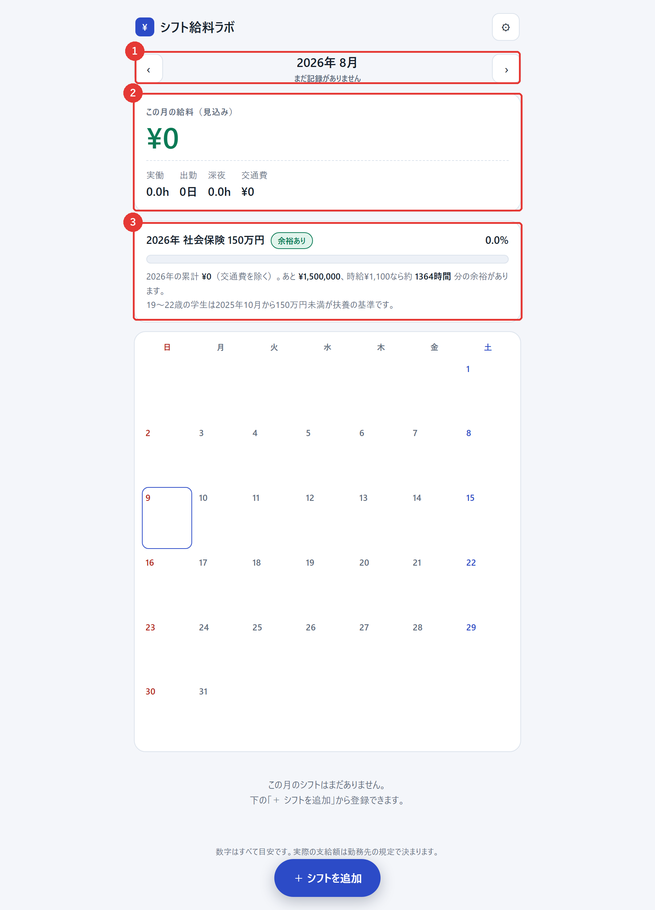
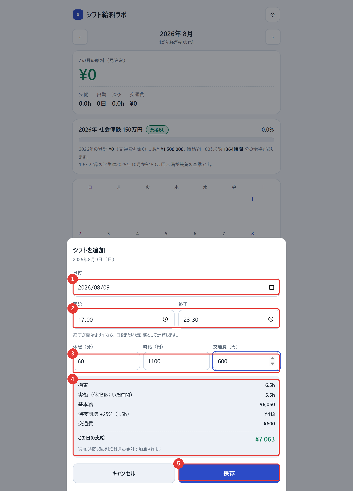
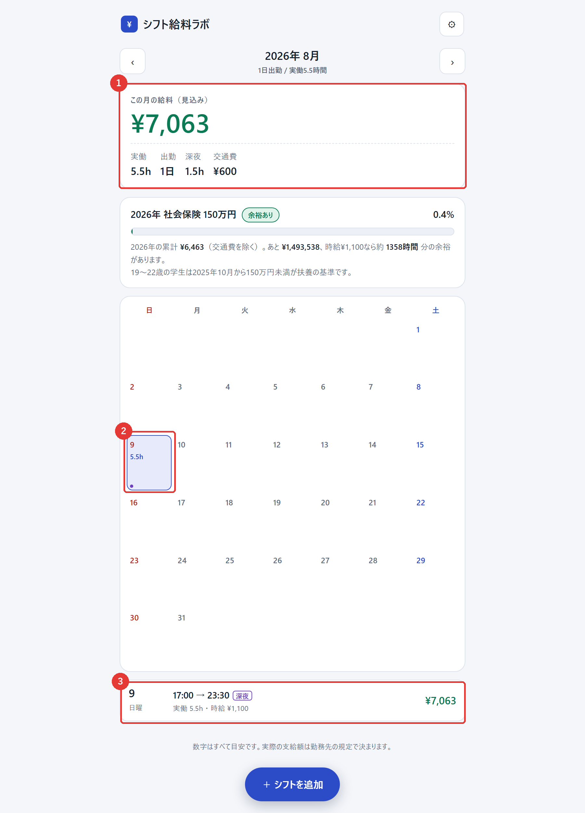

はじめて使う方が、登録から給料の確認までを迷わず終えられるようにまとめた手引きです。 画面の写真に沿って進めれば、3分ほどで最初の1件を登録できます。
インストールは不要です。ブラウザで次のURLを開くと、すぐに使いはじめられます。
https://stylishdeeb4.github.io/shift-pay-lab/
まだ何も登録していない状態では、金額はすべて「¥0」と表示されます。この画面が操作の起点になります。

画面のいちばん下にある「＋ シフトを追加」から登録します。ここでは例として、17:00〜23:30・休憩60分・時給1,100円・交通費600円のシフトを登録します。
画面下部にある青いボタンです。押すと入力画面が開きます。カレンダーの日付を直接押しても、その日の入力画面が開きます。
入力するとその場で金額が計算され、画面下に内訳が表示されます。保存する前に、金額が想定どおりか確認できます。

保存すると元の画面に戻り、登録した内容が3か所に反映されます。
今回の例では、実働5.5時間・深夜1.5時間・支給額 ¥7,063 として登録されました。

このアプリは、次の考え方で金額を計算しています。表示される金額はあくまで目安で、実際の支給額は勤務先の規定によって決まります。
| 項目 | 計算のしかた | 例（今回の入力） |
|---|---|---|
| 拘束時間 | 終了時刻 − 開始時刻 | 6.5 時間 |
| 実働時間 | 拘束時間 − 休憩 | 5.5 時間 |
| 基本給 | 実働時間 × 時給 | ¥6,050 |
| 深夜割増 | 22:00〜翌5:00 の時間に対して +25% | ¥413（1.5時間分） |
| 残業割増 | 1日8時間超、および週40時間超の時間に対して +25% （両方に該当する時間を二重に加算することはありません） |
— |
| 交通費 | 入力した金額をそのまま加算（年収の壁の集計には含めません） | ¥600 |
| 支給額 | 基本給 ＋ 各割増 ＋ 交通費 | ¥7,063 |